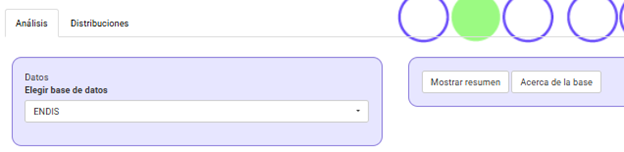
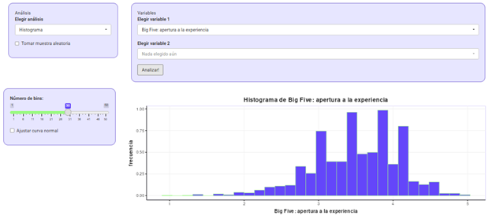

Práctico: Describir los datos - Histogramas y Tendencia central (S 02)
2.1 Primeros pasos: conocer (y amigarme con) los datos
Lectura asociada
Capítulo 2. ¿Por qué estadística? Capítulo 1. El rol de las variables
Contenidos
Visualización de datos: histograma
Medidas de tendencia central: moda, media y mediana
2.2 Panel de datos: ENDIS
Ya que seguro leíste el Capítulo 2. Describir los datos y querés ir más allá de la teoría, te proponemos trabajar con la base de datos de ENDIS para que explores y visualices datos de verdad.
Accede a cuanti.psico.edu.uy/panel
Describir datos - Distribución de variables
Antes de empezar a trabajar con la base ENDIS necesitamos un poco de contexto. Activa el botón “Acerca de la base” para conocer de qué se trata.

Y ahora… ¡Miremos los datos!
- Observa los datos. ¿Cuántas observaciones tiene la base de datos? ¿Puedes decir algo al respecto de cómo se comportan las observaciones, por ejemplo, si hay algunos valores más o menos frecuentes?
¿Necesitás ayuda?
Elegir análisis > Ver datos
Mmm… mejor examinemos los datos en un formato visual. Como vimos en el libro, vamos a convertir esos números a otras formas de visualización de datos.
- El primer resumen oficial: realiza el histograma de una variable.
¿Necesitás ayuda?
Elegir análisis > Histograma > Elegir variable 1 (numérica)
Por ejemplo, la variable Big Five: Apertura a la experiencia (una variable de personalidad del adulto)

Cambia el ancho de los intervalos (bins) y observa cómo cambia el gráfico. ¿Qué son los bins? ¿Qué ancho de bin seleccionarías finalmente? ¿Cómo es la forma del histograma (ej. simetría/asimetría, “picos”)
Repite el procedimiento para otras variables de esta base de datos
Describe con tus palabras qué representa cada barra de un histograma y qué información nos da esta visualización
¿Por qué para algunas de las variables de la base de datos no es posible realizar un histograma?
De muchos números a uno: tendencia central y dispersión
En el libro y en el ejercicio anterior vimos que podemos hacernos una idea de los datos al representarlos mediante gráficos. Ahora vamos a examinar la tendencia central de los datos de la base ENDIS a través de números.
Obtené la tabla de estadísticos descriptivos
¿Por qué para algunas variables no se ofrece el valor de la media ni otros estadísticos?
¿Qué estadísticos expresan la tendencia central en los datos? Fijate si sos capaz de definir cada uno con tus propias palabras
Localiza los valores de tendencia central para la variable Apertura a la experiencia y regístralos
Recupera el histograma de la variable Apertura a la experiencia, del ejercicio anterior. Copia la distribución en una hoja. Dibuja líneas verticales para marcar la Media, Moda y Mediana. ¿Coinciden los tres valores? ¿Por qué?
En la ENDIS, la personalidad se caracteriza a través de 5 factores. Como vimos, Apertura a la experiencia es uno de ellos. Repite el procedimiento para las otras cuatro variables de personalidad
Mira los histogramas de los cinco factores. Comenta y compara la forma de cada uno de ellos
2.3 Un caso de distribución de datos tomados por nuestra institución: la edad de los psicólogos en el Uruguay
Selecciona la base de datos Censo Nacional de Psicólogos y familiarizate con el origen de los datos. Luego:
Realiza un histograma de la variable edad seleccionando un número de bins adecuado. ¿Qué característica tiene la distribución? ¿A qué podría deberse que los datos se distribuyan así?
Mirando la distribución de la edad de los psicólogos, estima qué valores tendrían las medidas de tendencia central
Verifica tu estimación consultando la tabla de estadísticos descriptivos asociada a esta base de datos
Relaciona los valores que toman las medidas de tendencia central con la forma de la distribución
2.4 Y para terminar, un par de ejercicios múltiple opción como los del parcial
Para cada pregunta indique LA opción correcta:
Un histograma es:
Un gráfico de barras en el que se muestra la mediana, la media y el desvío estándar.
Una forma de cuantificar la dispersión de los datos
Una forma de representar gráficamente las frecuencias de los diferentes niveles o valores que toma una variable numérica
Un indicador de tendencia central
En un histograma, el eje horizontal (X) normalmente muestra:
La cantidad de participantes en cada categoría
Los intervalos o rangos de valores de la variable
La frecuencia de cada observación
El número total de observaciones
En un histograma, la altura de cada barra indica:
El valor máximo del intervalo
La frecuencia absoluta o relativa de ese intervalo
La media de todos los datos
La diferencia entre el valor mayor y menor del intervalo
La mediana es útil porque:
No se ve afectada por valores extremos (outliers)
Siempre es igual a la media, en cualquier distribución
Representa el valor más frecuente
Es necesaria para calcular el rango
Si una distribución de puntajes del BDI (Inventario de Depresión de Beck) es muy asimétrica hacia la derecha, lo más probable es que:
Media > Mediana
Media < Mediana
Media = Mediana
Moda > Media
Si en un grupo de 10 estudiantes, 6 obtuvieron 15 puntos en una escala de ansiedad y los otros 4 obtuvieron 10 puntos, la moda es:
15
10
12,5
La moda solo puede calcularse para variables categóricas (cualitativas)
Sobre las medidas de tendencia central:
La moda es el valor que más se repite
La mediana se obtiene sumando todos los valores que toma una variable y se divide entre el rango de la variable
La media es el valor que divide la distribución en dos partes iguales
La mediana, la moda y la media son iguales en variables con distribuciones asimétricas